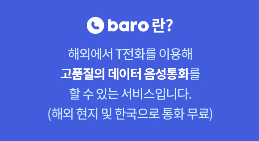
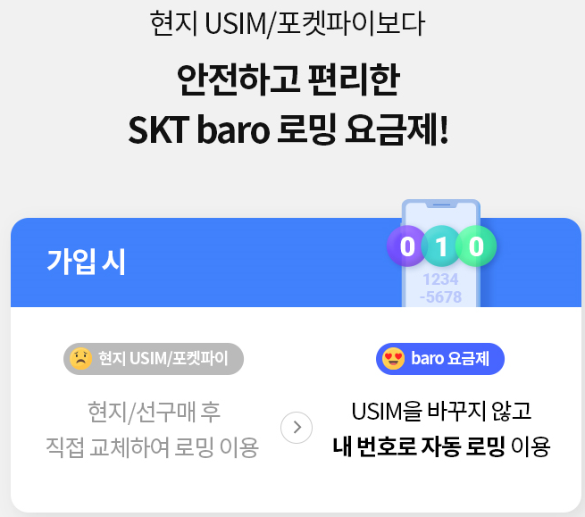
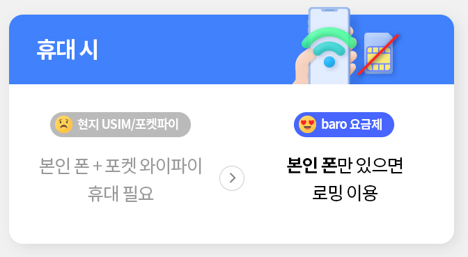
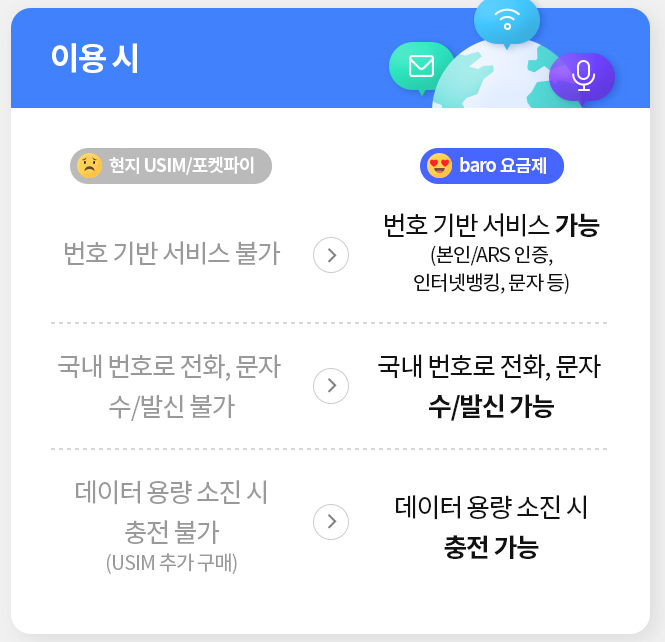
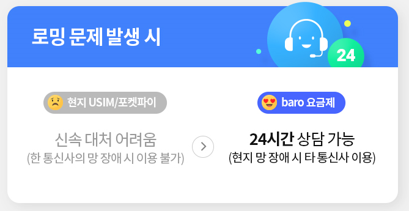
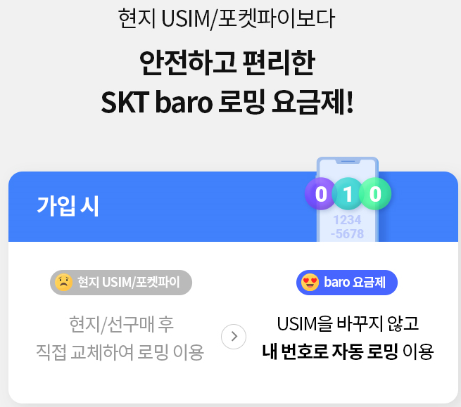
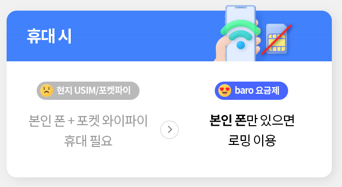
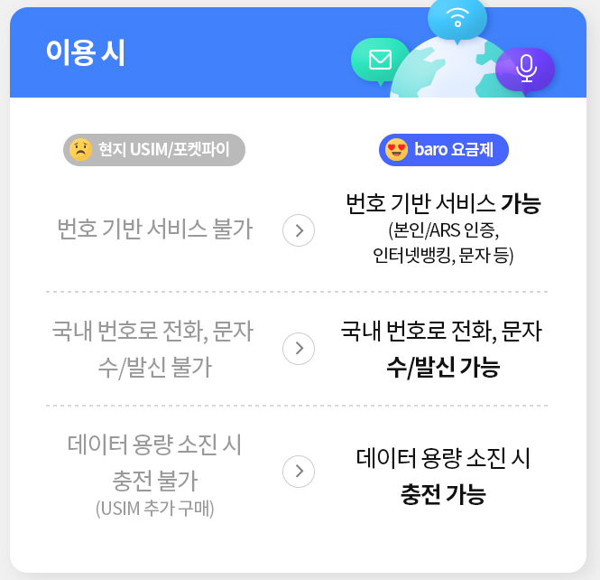
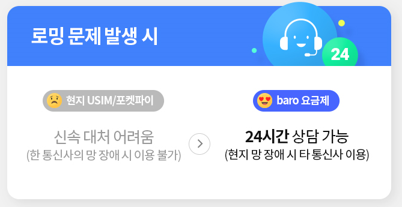

<- 이 부분은 '위드 코로나 시대 꿈꾸던 해외 여행의 시작' 대체
<- 이 부분은 '위드 코로나 시대 꿈꾸던 해외 여행의 시작' 대체
<- 위 동영상은 baro 사용 법 혹은 광고 만들어지면 추가
새로워진 baro와 함께라면
안전한 여행의 꿈이 펼쳐집니다!(위 플래시 영역은 baro 로고 등으로 대체)
안전한 여행의 꿈이 펼쳐집니다!

안전한 baro 통화/로밍 / baro 관련 장점 설명 , 여행지 관련 이미지를 타일로 구성하여 여행 분위기
대체재 대비 장점은 보고서 느낌이 아니라 고객 친화적인 멘트로 변경


(이하생략)가입하기 등 이외의 메뉴는 t월드로 링크
안전한 baro 통화/로밍 / baro 관련 장점 설명 , 여행지 관련 이미지를 타일로 구성하여 여행 분위기
대체재 대비 장점은 보고서 느낌이 아니라 고객 친화적인 멘트로 변경


(이하생략)가입하기 등 이외의 메뉴는 t월드로 링크